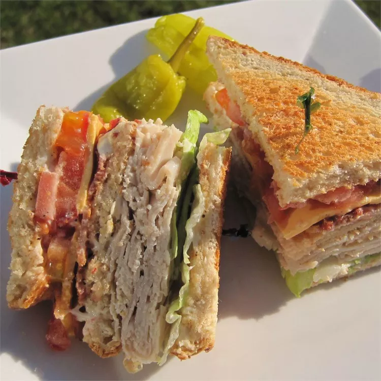

Club Sandwich

Description
An easy, quick, and delicious sandwich to eat anytime.
Ingredients
- 3 slices of your bread of choice
- (Recomendation: white Bread)
- 2 to 4 slices of your bacon of choice
- (Recomendation: 3 slices of bacon)
- 2 to 4 slices of your deli turkey breast of choice
- (Recomendation: 3 slices of deli turkey breast)
- 3 tablespoons of your mayonnaise of choice
- (Recomendation: 3 tablespoons of Low-fat Mayonnaise)
- 2 leaves of lettuce
- 2 slices of tomato
Steps
- Toast your bread slices.
(Quick Tip: Chop your vegetables and have your pan heating up as you toast your bread.)
- Chop your vegetables.
- Add your bacon slices to the hot pan. Cook over medium-high heat until evenly brown. Drain on paper towels.
- Spread each slice of bread with mayonnaise.
- On the 1st slice of toast, place the turkey and lettuce.
- Cover this with the 2nd slice of toast. Now place the bacon and tomato.
- Top this with the 3rd slice of toast and enjoy.